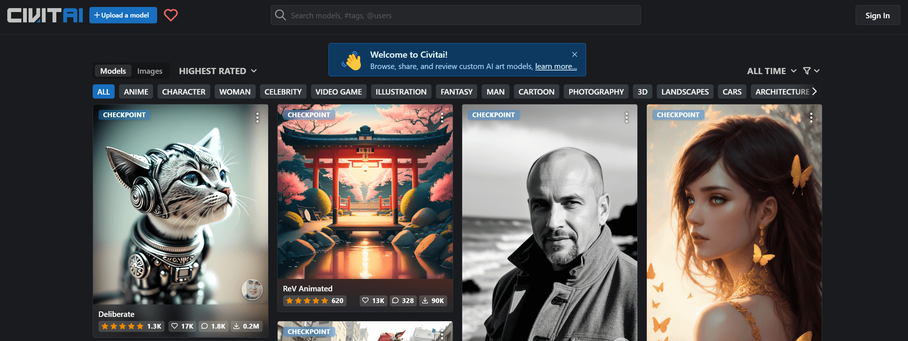
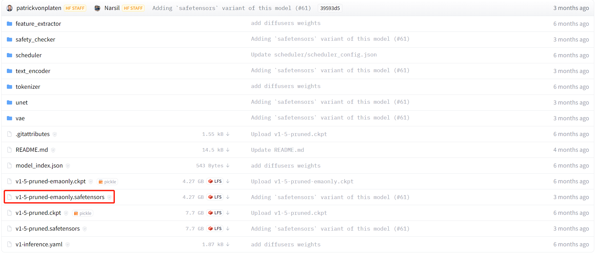
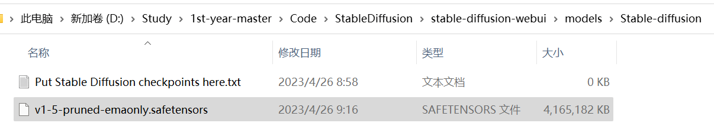
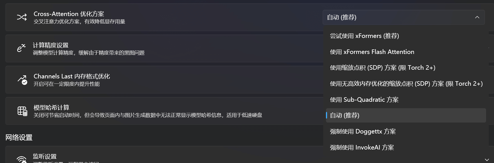
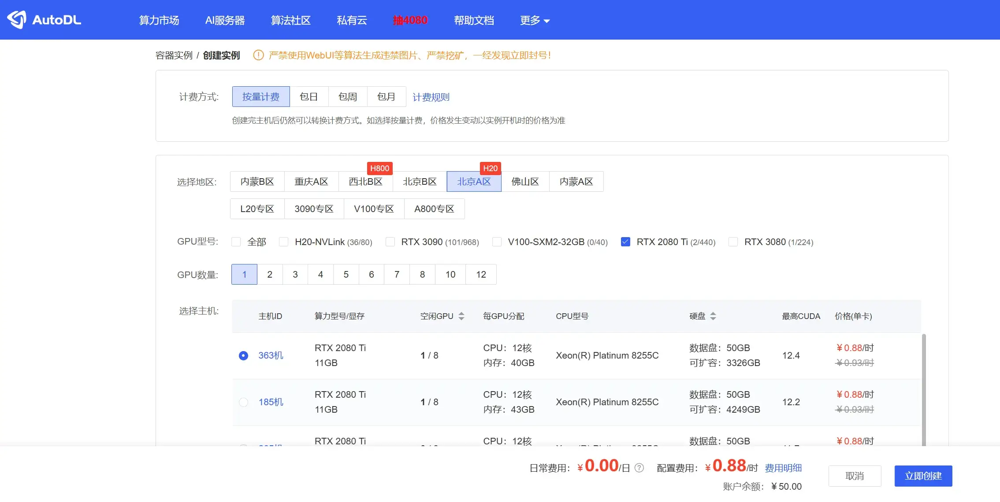
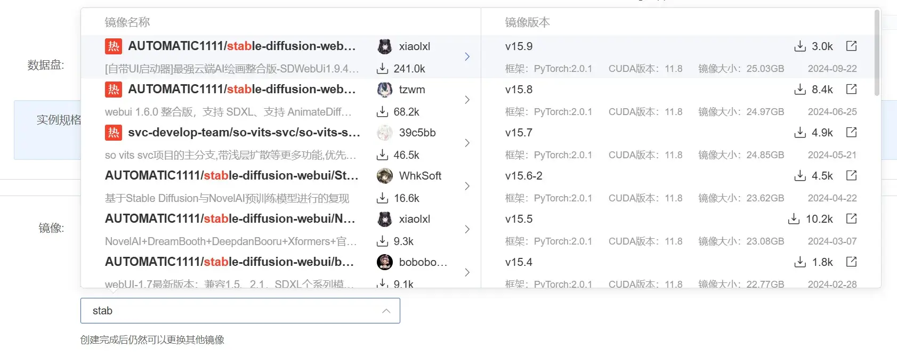

组件
-
Git
-
Python
-
AUTOMATIC1111
-
Stable Diffusion 模型
-
基础模型
- Stable Diffusion 2 最重要的转变是替换文本编码器。Stable Diffusion 1 使用 OpenAl 的 CLIP，这是一种开源模型，可以了解标题对图像的描述程度。虽然模型本身是开源的，但重要的是，训练 CLIP 的数据集不是公开可用的。 它使用已知 Stable Diffusion 2 改为使用 OpenCLIP 它是 CLIP 的开源版本数据集进行训练- LAION-5B 的美学子集，可过滤掉 NSFW 图像。Stability Al 表示 OpenCLIP “极大地提高了生成图像的质量”，事实上，在指标上优于 CLIP 的未发布版本。（有时候 2 的效果不如 1 是正常的）
- huggingface
-
预训练的模型（在基础模型的基础上做了与预先的微调，可以生成特定风格的人物）
-
{kind=link}

模型有 ckpt 和 safetensors
-
ckpt比较早期，嵌入了 python 的一些脚本，容易受到病毒攻击 -
safetensors较新，且读取速度更快
安装
克隆仓库
AUTOMATIC1111/stable-diffusion-webui: Stable Diffusion web UI (github.com)：
git clone https://github.com/AUTOMATIC1111/stable-diffusion-webui下载模型
以 1.5 为例：runwayml/stable-diffusion-v1-5 at main (huggingface.co)
{kind=link}

将下载好的模型放入仓库的 models/Stable-diffusion 中：
{kind=link}

安装 conda
conda create -n stable-diffusion python=3.10conda activate stable-diffusionwhere pythonC:\Users\19048\.conda\envs\stable-diffusion\python.exe
C:\ProgramData\anaconda3\python.exe
C:\Users\19048\AppData\Local\Microsoft\WindowsApps\python.exe
设置仓库根目录下，webui-user.bat 里的参数：
# git pull
@echo off
set PYTHON="C:\Users\19048\.conda\envs\stable-diffusion\python.exe"
set GIT=
set VENV_DIR=
set COMMANDLINE_ARGS=
call webui.batgit pull让项目每次运行前都拉取最新的仓库，我就不设了set PYTHON="C:\Users\19048\.conda\envs\stable-diffusion\python.exe"设置 python 解释器的位置
运行 webui
webui-user.batvenv "D:\Study\1st-year-master\Code\StableDiffusion\stable-diffusion-webui\venv\Scripts\Python.exe"
Python 3.10.9 | packaged by Anaconda, Inc. | (main, Mar 1 2023, 18:18:15) [MSC v.1916 64 bit (AMD64)]
Commit hash: 22bcc7be428c94e9408f589966c2040187245d81
Installing torch and torchvision
Looking in indexes: https://pypi.org/simple, https://download.pytorch.org/whl/cu117
Collecting torch==1.13.1+cu117
Downloading https://download.pytorch.org/whl/cu117/torch-1.13.1%2Bcu117-cp310-cp310-win_amd64.whl (2255.4 MB)
━╸━━━━━━━━━━━━━━━━━━━━━━━━━━━━━━━━━━━━━━ 0.1/2.3 GB 2.2 MB/s eta 0:16:38
我试图绕开这个安装 torch 的环节，因为我觉得它安装有点慢，但是我不会😅……但是把代理关了好像还蛮快的？冀大的网速还是值得一夸。
老是下载一半报错：
pip._vendor.urllib3.excerptions.ReadTimeoutError: HTTPSConnectionPool(host='download.pytorch.org', port=443): Read timed out.
唉，因为用清华镜像会下成 CPU 版本的 pytorch，只能一直试了，真傻逼啊。
结果安装到gfpgan还是失败……先吃午饭吧。
我说婷婷！直接上网找个整合版安装包吧😅。
打开网页报错 Something went wrong Expecting value: line 1 column 1 (char 0)的，把你梯子关了
尝试使用xFormers会报错，好吧那就关了。
{kind=link}

玩
一些使用教程：
- 2023-03-22_5分钟学会Stable Diffusion图生图功能 - 知乎 (zhihu.com)
- KREA — create better prompts. 这个网站可以看到其他人生成的图片所用到的提示词。
太变态的就不发了咳咳咳……
- cubistic painting of Samuel Beckett by Picasso and Georges Braque, analytical cubism, brushstrokes
- 毕加索和乔治·布拉克分析立体主义笔触的塞缪尔·贝克特立体主义绘画

- photo of rihanna. latex. artgerm, ilya kuvshinov, alphonse mucha. highly detailed 8 k. intricate. nikon d 8 5 0 5 5 mm. award wi
- 蕾哈娜的照片。乳胶。Artgerm， Ilya Kuvshinov， Alphonse Mucha.高度详细的 8 K. 错综复杂。尼康 D 8 5 0 5 5 毫米奖 WI

- junji ito style homer simpson, intricate, highly detailed, illustration, art by junji ito, junji ito
- 伊藤淳二风格荷马辛普森，复杂，高度详细，插图，伊藤淳二，伊藤润二的艺术

- Audrey Hepburn painting by Van Gogh
- 梵高画的奥黛丽赫本

- realistic extremely detailed portrait painting of a beautiful black woman with a robot, city street on background by Jean Delvil
- 现实的极其详细的肖像画，一个美丽的黑人妇女与机器人，背景上的城市街道，由 Jean Delvil 绘制

- Michael Jackson painting by Pegaso
- 毕加索画的迈克尔杰克逊

- a really suspicious horse, you can just tell that it's up to no good
- 一匹非常可疑的马，你可以说它没有好处

线上部署
Colab
- 本地吃配置
- 本地部署复杂
- 随时随地访问
- 免费
Colab 部署地址：camenduru/stable-diffusion-webui-colab at drive (github.com)
AutoDL
{kind=link}

租一个 2080。
{kind=link}

这里选择 v15.9
发现你是第一次运行, 正在初始化镜像依赖
mkdir: cannot create directory ‘/root/.cache’: File exists
移动完成
正在自动下载模型:
正在下载第1个文件, 总共有1个文件
>>> download to /root/autodl-tmp/models/checkpoint/xiaolxl/stable-diffusion-models/Anything-ink.safetensors
downloading file [stable-diffusion-models/Anything-ink.safetensors]
downloading... 100% 2.0 GiB/2.0 GiBiB
下载完毕!文件已保存到:/root/autodl-tmp/models/checkpoint/Anything-ink.safetensors
模型下载完成
正在自动下载vae:
正在下载第1个文件, 总共有3个文件
>>> download to /root/autodl-tmp/models/vae/xiaolxl/stable-diffusion-vaes/model.vae.pt
downloading file [stable-diffusion-vaes/model.vae.pt]
downloading... 100% 785 MiB/785 MiB
下载完毕!文件已保存到:/root/autodl-tmp/models/vae/model.vae.pt
正在下载第2个文件, 总共有3个文件
>>> download to /root/autodl-tmp/models/vae/xiaolxl/stable-diffusion-vaes/sdxl_vae.safetensors
downloading file [stable-diffusion-vaes/sdxl_vae.safetensors]
downloading... 100% 319 MiB/319 MiB
下载完毕!文件已保存到:/root/autodl-tmp/models/vae/sdxl_vae.safetensors
正在下载第3个文件, 总共有3个文件
>>> download to /root/autodl-tmp/models/vae/xiaolxl/stable-diffusion-vaes/vae-ft-mse-840000-ema-pruned.safetensors
downloading file [stable-diffusion-vaes/vae-ft-mse-840000-ema-pruned.safetensors]
downloading... 100% 319 MiB/319 MiB
下载完毕!文件已保存到:/root/autodl-tmp/models/vae/vae-ft-mse-840000-ema-pruned.safetensors
vae下载完成
正在自动下载核心依赖:
正在下载第1个文件, 总共有11个文件
>>> download to /root/autodl-tmp/models/ESRGAN/xiaolxl/sdwebui_core/ESRGAN_4x.pth
downloading file [sdwebui_core/ESRGAN_4x.pth]
downloading... 100% 64 MiB/64 MiB
下载完毕!文件已保存到:/root/autodl-tmp/models/ESRGAN/ESRGAN_4x.pth
正在下载第2个文件, 总共有11个文件
>>> download to /root/autodl-tmp/models/GFPGAN/xiaolxl/sdwebui_core/detection_Resnet50_Final.pth
downloading file [sdwebui_core/detection_Resnet50_Final.pth]
downloading... 100% 104 MiB/104 MiB
下载完毕!文件已保存到:/root/autodl-tmp/models/GFPGAN/detection_Resnet50_Final.pth
正在下载第3个文件, 总共有11个文件
>>> download to /root/autodl-tmp/models/GFPGAN/xiaolxl/sdwebui_core/parsing_bisenet.pth
downloading file [sdwebui_core/parsing_bisenet.pth]
downloading... 100% 51 MiB/51 MiB
下载完毕!文件已保存到:/root/autodl-tmp/models/GFPGAN/parsing_bisenet.pth
正在下载第4个文件, 总共有11个文件
>>> download to /root/autodl-tmp/models/GFPGAN/xiaolxl/sdwebui_core/parsing_parsenet.pth
downloading file [sdwebui_core/parsing_parsenet.pth]
downloading... 100% 81 MiB/81 MiB
下载完毕!文件已保存到:/root/autodl-tmp/models/GFPGAN/parsing_parsenet.pth
正在下载第5个文件, 总共有11个文件
>>> download to /root/autodl-tmp/models/LDSR/xiaolxl/sdwebui_core/model.ckpt
downloading file [sdwebui_core/model.ckpt]
downloading... 100% 1.9 GiB/1.9 GiBiB
下载完毕!文件已保存到:/root/autodl-tmp/models/LDSR/model.ckpt
正在下载第6个文件, 总共有11个文件
>>> download to /root/autodl-tmp/models/LDSR/xiaolxl/sdwebui_core/project.yaml
downloading file [sdwebui_core/project.yaml]
downloading... 100% 1.9 KiB/1.9 KiB
下载完毕!文件已保存到:/root/autodl-tmp/models/LDSR/project.yaml
正在下载第7个文件, 总共有11个文件
>>> download to /root/autodl-tmp/models/RealESRGAN/xiaolxl/sdwebui_core/RealESRGAN_x4plus.pth
downloading file [sdwebui_core/RealESRGAN_x4plus.pth]
downloading... 100% 64 MiB/64 MiB
下载完毕!文件已保存到:/root/autodl-tmp/models/RealESRGAN/RealESRGAN_x4plus.pth
正在下载第8个文件, 总共有11个文件
>>> download to /root/autodl-tmp/models/RealESRGAN/xiaolxl/sdwebui_core/RealESRGAN_x4plus_anime_6B.pth
downloading file [sdwebui_core/RealESRGAN_x4plus_anime_6B.pth]
downloading... 100% 17 MiB/17 MiB
下载完毕!文件已保存到:/root/autodl-tmp/models/RealESRGAN/RealESRGAN_x4plus_anime_6B.pth
正在下载第9个文件, 总共有11个文件
>>> download to /root/autodl-tmp/models/ScuNET/xiaolxl/sdwebui_core/ScuNET.pth
downloading file [sdwebui_core/ScuNET.pth]
downloading... 100% 69 MiB/69 MiB
下载完毕!文件已保存到:/root/autodl-tmp/models/ScuNET/ScuNET.pth
正在下载第10个文件, 总共有11个文件
>>> download to /root/autodl-tmp/models/SwinIR/xiaolxl/sdwebui_core/SwinIR_4x.pth
downloading file [sdwebui_core/SwinIR_4x.pth]
downloading... 100% 136 MiB/136 MiB
下载完毕!文件已保存到:/root/autodl-tmp/models/SwinIR/SwinIR_4x.pth
正在下载第11个文件, 总共有11个文件
>>> download to /root/autodl-tmp/models/Codeformer/xiaolxl/sdwebui_core/codeformer-v0.1.0.pth
downloading file [sdwebui_core/codeformer-v0.1.0.pth]
downloading... 100% 359 MiB/359 MiB
下载完毕!文件已保存到:/root/autodl-tmp/models/Codeformer/codeformer-v0.1.0.pth
核心依赖下载完成
Python 3.10.6 (main, Oct 24 2022, 16:07:47) [GCC 11.2.0]
Version: v1.10.1
Commit hash: 82a973c04367123ae98bd9abdf80d9eda9b910e2
Launching Web UI with arguments: --ckpt-dir /root/autodl-tmp/models/checkpoint --embeddings-dir /root/autodl-tmp/models/embeddings --hypernetwork-dir /root/autodl-tmp/models/hypernetwork --lora-dir /root/autodl-tmp/models/lora --vae-dir /root/autodl-tmp/models/vae --controlnet-dir /root/autodl-tmp/models/controlnet --controlnet-annotator-models-path /root/autodl-tmp/models/controlnet_annotator --dreambooth-models-path=/root/autodl-tmp/models/dreambooth --codeformer-models-path /root/autodl-tmp/models/Codeformer --gfpgan-models-path /root/autodl-tmp/models/GFPGAN --esrgan-models-path /root/autodl-tmp/models/ESRGAN --bsrgan-models-path /root/autodl-tmp/models/BSRGAN --realesrgan-models-path /root/autodl-tmp/models/RealESRGAN --scunet-models-path /root/autodl-tmp/models/ScuNET --swinir-models-path /root/autodl-tmp/models/SwinIR --ldsr-models-path /root/autodl-tmp/models/LDSR --port=6006 --skip-install --xformers --disable-safe-unpickle --enable-insecure-extension-access --no-half-vae --disable-nan-check --max-batch-count=16
2024-11-22 10:09:33.031050: I tensorflow/core/util/port.cc:113] oneDNN custom operations are on. You may see slightly different numerical results due to floating-point round-off errors from different computation orders. To turn them off, set the environment variable `TF_ENABLE_ONEDNN_OPTS=0`.
2024-11-22 10:09:33.031761: I external/local_tsl/tsl/cuda/cudart_stub.cc:32] Could not find cuda drivers on your machine, GPU will not be used.
2024-11-22 10:09:33.036407: I external/local_tsl/tsl/cuda/cudart_stub.cc:32] Could not find cuda drivers on your machine, GPU will not be used.
2024-11-22 10:09:33.096722: I tensorflow/core/platform/cpu_feature_guard.cc:210] This TensorFlow binary is optimized to use available CPU instructions in performance-critical operations.
To enable the following instructions: AVX2 AVX512F AVX512_VNNI FMA, in other operations, rebuild TensorFlow with the appropriate compiler flags.
2024-11-22 10:09:34.162360: W tensorflow/compiler/tf2tensorrt/utils/py_utils.cc:38] TF-TRT Warning: Could not find TensorRT
[2024-11-22 10:09:37,570][DEBUG][git.cmd] - Popen(['git', 'version'], cwd=/root/stable-diffusion-webui, stdin=None, shell=False, universal_newlines=False)
[2024-11-22 10:09:37,573][DEBUG][git.cmd] - Popen(['git', 'version'], cwd=/root/stable-diffusion-webui, stdin=None, shell=False, universal_newlines=False)
============================================================================
You are running torch 2.0.1+cu118.
The program is tested to work with torch 2.1.2.
To reinstall the desired version, run with commandline flag --reinstall-torch.
Beware that this will cause a lot of large files to be downloaded, as well as
there are reports of issues with training tab on the latest version.
Use --skip-version-check commandline argument to disable this check.
==========================================================================
=============================================================================
You are running xformers 0.0.22.
The program is tested to work with xformers 0.0.23.post1.
To reinstall the desired version, run with commandline flag --reinstall-xformers.
Use --skip-version-check commandline argument to disable this check.
=============================================================================
Tag Autocomplete: Could not locate model-keyword extension, Lora trigger word completion will be limited to those added through the extra networks menu.
[2024-11-22 10:09:39,928][DEBUG][filelock] - Attempting to acquire lock 140561340305072 on /root/.cache/huggingface/hub/.locks/models--Bingsu--adetailer/3991202eb69e9ddcb3b9ba80cdeb41e734ffaf844403d6c9f47d515cd88c6f29.lock
[2024-11-22 10:09:39,928][DEBUG][filelock] - Lock 140561340305072 acquired on /root/.cache/huggingface/hub/.locks/models--Bingsu--adetailer/3991202eb69e9ddcb3b9ba80cdeb41e734ffaf844403d6c9f47d515cd88c6f29.lock
[2024-11-22 10:09:39,934][DEBUG][filelock] - Attempting to acquire lock 140561340307616 on /root/.cache/huggingface/hub/.locks/models--Bingsu--adetailer/38fc8aaae97cb6e70be4ec44770005b26ed473471362afcda62a0037d7ccf432.lock
[2024-11-22 10:09:39,934][DEBUG][filelock] - Lock 140561340307616 acquired on /root/.cache/huggingface/hub/.locks/models--Bingsu--adetailer/38fc8aaae97cb6e70be4ec44770005b26ed473471362afcda62a0037d7ccf432.lock
[2024-11-22 10:09:39,978][DEBUG][filelock] - Attempting to acquire lock 140561342047728 on /root/.cache/huggingface/hub/.locks/models--Bingsu--adetailer/70b640f8f60b1cf0dcc72f30caf3da9495eb2fb6509da48c53374ad6806e6a9c.lock
[2024-11-22 10:09:39,978][DEBUG][filelock] - Lock 140561342047728 acquired on /root/.cache/huggingface/hub/.locks/models--Bingsu--adetailer/70b640f8f60b1cf0dcc72f30caf3da9495eb2fb6509da48c53374ad6806e6a9c.lock
[2024-11-22 10:09:39,989][DEBUG][filelock] - Attempting to acquire lock 140561340302624 on /root/.cache/huggingface/hub/.locks/models--Bingsu--adetailer/c7237eff25787377de196961140ceaed324d859ee8de5a775d93d33a0e3fab78.lock
[2024-11-22 10:09:39,989][DEBUG][filelock] - Lock 140561340302624 acquired on /root/.cache/huggingface/hub/.locks/models--Bingsu--adetailer/c7237eff25787377de196961140ceaed324d859ee8de5a775d93d33a0e3fab78.lock
[2024-11-22 10:09:39,995][DEBUG][filelock] - Attempting to acquire lock 140561340312128 on /root/.cache/huggingface/hub/.locks/models--Bingsu--adetailer/53c54aec2239355faffc6c5b70d0f3d05042f386f956cbec39cec46ad456f050.lock
[2024-11-22 10:09:39,995][DEBUG][filelock] - Lock 140561340312128 acquired on /root/.cache/huggingface/hub/.locks/models--Bingsu--adetailer/53c54aec2239355faffc6c5b70d0f3d05042f386f956cbec39cec46ad456f050.lock
hand_yolov8n.pt: 0%| | 0.00/6.24M [00:00<?, ?B/s]
person_yolov8n-seg.pt: 0%| | 0.00/6.78M [00:00<?, ?B/s]
person_yolov8s-seg.pt: 0%| | 0.00/23.9M [00:00<?, ?B/s]
face_yolov8n.pt: 0%| | 0.00/6.23M [00:00<?, ?B/s]
hand_yolov8n.pt: 100%|█████████████████████| 6.24M/6.24M [00:01<00:00, 6.23MB/s]
[2024-11-22 10:09:41,420][DEBUG][filelock] - Attempting to release lock 140561340305072 on /root/.cache/huggingface/hub/.locks/models--Bingsu--adetailer/3991202eb69e9ddcb3b9ba80cdeb41e734ffaf844403d6c9f47d515cd88c6f29.lock
[2024-11-22 10:09:41,420][DEBUG][filelock] - Lock 140561340305072 released on /root/.cache/huggingface/hub/.locks/models--Bingsu--adetailer/3991202eb69e9ddcb3b9ba80cdeb41e734ffaf844403d6c9f47d515cd88c6f29.lock
person_yolov8n-seg.pt: 100%|███████████████| 6.78M/6.78M [00:01<00:00, 5.19MB/s]
[2024-11-22 10:09:41,779][DEBUG][filelock] - Attempting to release lock 140561340307616 on /root/.cache/huggingface/hub/.locks/models--Bingsu--adetailer/38fc8aaae97cb6e70be4ec44770005b26ed473471362afcda62a0037d7ccf432.lock
[2024-11-22 10:09:41,780][DEBUG][filelock] - Lock 140561340307616 released on /root/.cache/huggingface/hub/.locks/models--Bingsu--adetailer/38fc8aaae97cb6e70be4ec44770005b26ed473471362afcda62a0037d7ccf432.lock
face_yolov8n.pt: 100%|█████████████████████| 6.23M/6.23M [00:01<00:00, 4.71MB/s]
[2024-11-22 10:09:41,860][DEBUG][filelock] - Attempting to release lock 140561342047728 on /root/.cache/huggingface/hub/.locks/models--Bingsu--adetailer/70b640f8f60b1cf0dcc72f30caf3da9495eb2fb6509da48c53374ad6806e6a9c.lock
[2024-11-22 10:09:41,860][DEBUG][filelock] - Lock 140561342047728 released on /root/.cache/huggingface/hub/.locks/models--Bingsu--adetailer/70b640f8f60b1cf0dcc72f30caf3da9495eb2fb6509da48c53374ad6806e6a9c.lock
person_yolov8s-seg.pt: 44%|██████▌ | 10.5M/23.9M [00:01<00:01, 7.20MB/s]
face_yolov8s.pt: 47%|█████████▊ | 10.5M/22.5M [00:01<00:02, 5.43MB/s]
person_yolov8s-seg.pt: 88%|█████████████▏ | 21.0M/23.9M [00:02<00:00, 8.41MB/s]
person_yolov8s-seg.pt: 100%|███████████████| 23.9M/23.9M [00:02<00:00, 8.63MB/s]
[2024-11-22 10:09:43,256][DEBUG][filelock] - Attempting to release lock 140561340312128 on /root/.cache/huggingface/hub/.locks/models--Bingsu--adetailer/53c54aec2239355faffc6c5b70d0f3d05042f386f956cbec39cec46ad456f050.lock
[2024-11-22 10:09:43,256][DEBUG][filelock] - Lock 140561340312128 released on /root/.cache/huggingface/hub/.locks/models--Bingsu--adetailer/53c54aec2239355faffc6c5b70d0f3d05042f386f956cbec39cec46ad456f050.lock
face_yolov8s.pt: 93%|███████████████████▌ | 21.0M/22.5M [00:02<00:00, 7.86MB/s]
face_yolov8s.pt: 100%|█████████████████████| 22.5M/22.5M [00:02<00:00, 7.52MB/s]
[2024-11-22 10:09:43,628][DEBUG][filelock] - Attempting to release lock 140561340302624 on /root/.cache/huggingface/hub/.locks/models--Bingsu--adetailer/c7237eff25787377de196961140ceaed324d859ee8de5a775d93d33a0e3fab78.lock
[2024-11-22 10:09:43,628][DEBUG][filelock] - Lock 140561340302624 released on /root/.cache/huggingface/hub/.locks/models--Bingsu--adetailer/c7237eff25787377de196961140ceaed324d859ee8de5a775d93d33a0e3fab78.lock
[-] ADetailer initialized. version: 24.9.0, num models: 10
Using sqlite file: /root/stable-diffusion-webui/extensions/sd-webui-agent-scheduler/task_scheduler.sqlite3
ControlNet preprocessor location: /root/autodl-tmp/models/controlnet_annotator
2024-11-22 10:09:46,370 - ControlNet - INFO - ControlNet v1.1.455
Please 'pip install apex'
[sd-webui-freeu] Controlnet support: *enabled*
sd-webui-prompt-all-in-one background API service started successfully.
2024-11-22 10:09:47,532 - roop - INFO - roop v0.0.2
2024-11-22 10:09:47,627 - roop - INFO - roop v0.0.2
[2024-11-22 10:09:48,591][DEBUG][api.py] - API flag not enabled, skipping API layer. Please enable with --api
WD14 tagger /gpu:0, uname_result(system='Linux', node='autodl-container-2cce11be52-d05bc5cf', release='5.4.0-182-generic', version='#202-Ubuntu SMP Fri Apr 26 12:29:36 UTC 2024', machine='x86_64') ==
Checkpoint Anything-ink.safetensors [a1535d0a42] not found; loading fallback Anything-ink.safetensors
Calculating sha256 for /root/stable-diffusion-webui/models/Stable-diffusion/Anything-ink.safetensors: 2024-11-22 10:09:50,529 - ControlNet - INFO - ControlNet UI callback registered.
LightDiffusionFlow 绑定完成
*Deforum ControlNet support: enabled*
[tag-editor] Custom taggers loaded: ['Improved Aesthetic Predictor', 'cafeai aesthetic classifier', 'aesthetic shadow', 'wd aesthetic classifier']
Running on local URL: http://127.0.0.1:6006
[2024-11-22 10:09:53,176][DEBUG][botocore.hooks] - Changing event name from creating-client-class.iot-data to creating-client-class.iot-data-plane
[2024-11-22 10:09:53,178][DEBUG][botocore.hooks] - Changing event name from before-call.apigateway to before-call.api-gateway
[2024-11-22 10:09:53,178][DEBUG][botocore.hooks] - Changing event name from request-created.machinelearning.Predict to request-created.machine-learning.Predict
[2024-11-22 10:09:53,179][DEBUG][botocore.hooks] - Changing event name from before-parameter-build.autoscaling.CreateLaunchConfiguration to before-parameter-build.auto-scaling.CreateLaunchConfiguration
[2024-11-22 10:09:53,180][DEBUG][botocore.hooks] - Changing event name from before-parameter-build.route53 to before-parameter-build.route-53
[2024-11-22 10:09:53,180][DEBUG][botocore.hooks] - Changing event name from request-created.cloudsearchdomain.Search to request-created.cloudsearch-domain.Search
[2024-11-22 10:09:53,181][DEBUG][botocore.hooks] - Changing event name from docs.*.autoscaling.CreateLaunchConfiguration.complete-section to docs.*.auto-scaling.CreateLaunchConfiguration.complete-section
[2024-11-22 10:09:53,183][DEBUG][botocore.hooks] - Changing event name from before-parameter-build.logs.CreateExportTask to before-parameter-build.cloudwatch-logs.CreateExportTask
[2024-11-22 10:09:53,183][DEBUG][botocore.hooks] - Changing event name from docs.*.logs.CreateExportTask.complete-section to docs.*.cloudwatch-logs.CreateExportTask.complete-section
[2024-11-22 10:09:53,183][DEBUG][botocore.hooks] - Changing event name from before-parameter-build.cloudsearchdomain.Search to before-parameter-build.cloudsearch-domain.Search
[2024-11-22 10:09:53,183][DEBUG][botocore.hooks] - Changing event name from docs.*.cloudsearchdomain.Search.complete-section to docs.*.cloudsearch-domain.Search.complete-section
[2024-11-22 10:09:53,185][DEBUG][botocore.utils] - IMDS ENDPOINT: http://169.254.169.254/
[2024-11-22 10:09:53,186][DEBUG][botocore.credentials] - Looking for credentials via: env
[2024-11-22 10:09:53,188][DEBUG][botocore.credentials] - Looking for credentials via: assume-role
[2024-11-22 10:09:53,188][DEBUG][botocore.credentials] - Looking for credentials via: assume-role-with-web-identity
[2024-11-22 10:09:53,188][DEBUG][botocore.credentials] - Looking for credentials via: sso
[2024-11-22 10:09:53,188][DEBUG][botocore.credentials] - Looking for credentials via: shared-credentials-file
[2024-11-22 10:09:53,188][DEBUG][botocore.credentials] - Looking for credentials via: custom-process
[2024-11-22 10:09:53,188][DEBUG][botocore.credentials] - Looking for credentials via: config-file
[2024-11-22 10:09:53,188][DEBUG][botocore.credentials] - Looking for credentials via: ec2-credentials-file
[2024-11-22 10:09:53,188][DEBUG][botocore.credentials] - Looking for credentials via: boto-config
[2024-11-22 10:09:53,188][DEBUG][botocore.credentials] - Looking for credentials via: container-role
[2024-11-22 10:09:53,188][DEBUG][botocore.credentials] - Looking for credentials via: iam-role
[2024-11-22 10:09:54,190][DEBUG][botocore.utils] - Caught retryable HTTP exception while making metadata service request to http://169.254.169.254/latest/api/token: Connect timeout on endpoint URL: "http://169.254.169.254/latest/api/token"
Traceback (most recent call last):
File "/root/miniconda3/envs/xl_env/lib/python3.10/site-packages/urllib3/connection.py", line 174, in _new_conn
conn = connection.create_connection(
File "/root/miniconda3/envs/xl_env/lib/python3.10/site-packages/urllib3/util/connection.py", line 95, in create_connection
raise err
File "/root/miniconda3/envs/xl_env/lib/python3.10/site-packages/urllib3/util/connection.py", line 85, in create_connection
sock.connect(sa)
TimeoutError: timed out
During handling of the above exception, another exception occurred:
Traceback (most recent call last):
File "/root/miniconda3/envs/xl_env/lib/python3.10/site-packages/botocore/httpsession.py", line 465, in send
urllib_response = conn.urlopen(
File "/root/miniconda3/envs/xl_env/lib/python3.10/site-packages/urllib3/connectionpool.py", line 787, in urlopen
retries = retries.increment(
File "/root/miniconda3/envs/xl_env/lib/python3.10/site-packages/urllib3/util/retry.py", line 525, in increment
raise six.reraise(type(error), error, _stacktrace)
File "/root/miniconda3/envs/xl_env/lib/python3.10/site-packages/urllib3/packages/six.py", line 770, in reraise
raise value
File "/root/miniconda3/envs/xl_env/lib/python3.10/site-packages/urllib3/connectionpool.py", line 703, in urlopen
httplib_response = self._make_request(
File "/root/miniconda3/envs/xl_env/lib/python3.10/site-packages/urllib3/connectionpool.py", line 398, in _make_request
conn.request(method, url, **httplib_request_kw)
File "/root/miniconda3/envs/xl_env/lib/python3.10/site-packages/urllib3/connection.py", line 239, in request
super(HTTPConnection, self).request(method, url, body=body, headers=headers)
File "/root/miniconda3/envs/xl_env/lib/python3.10/http/client.py", line 1282, in request
self._send_request(method, url, body, headers, encode_chunked)
File "/root/miniconda3/envs/xl_env/lib/python3.10/site-packages/botocore/awsrequest.py", line 94, in _send_request
rval = super()._send_request(
File "/root/miniconda3/envs/xl_env/lib/python3.10/http/client.py", line 1328, in _send_request
self.endheaders(body, encode_chunked=encode_chunked)
File "/root/miniconda3/envs/xl_env/lib/python3.10/http/client.py", line 1277, in endheaders
self._send_output(message_body, encode_chunked=encode_chunked)
File "/root/miniconda3/envs/xl_env/lib/python3.10/site-packages/botocore/awsrequest.py", line 123, in _send_output
self.send(msg)
File "/root/miniconda3/envs/xl_env/lib/python3.10/site-packages/botocore/awsrequest.py", line 218, in send
return super().send(str)
File "/root/miniconda3/envs/xl_env/lib/python3.10/http/client.py", line 975, in send
self.connect()
File "/root/miniconda3/envs/xl_env/lib/python3.10/site-packages/urllib3/connection.py", line 205, in connect
conn = self._new_conn()
File "/root/miniconda3/envs/xl_env/lib/python3.10/site-packages/urllib3/connection.py", line 179, in _new_conn
raise ConnectTimeoutError(
urllib3.exceptions.ConnectTimeoutError: (<botocore.awsrequest.AWSHTTPConnection object at 0x7fd6b31d9a80>, 'Connection to 169.254.169.254 timed out. (connect timeout=1)')
During handling of the above exception, another exception occurred:
Traceback (most recent call last):
File "/root/miniconda3/envs/xl_env/lib/python3.10/site-packages/botocore/utils.py", line 456, in _fetch_metadata_token
response = self._session.send(request.prepare())
File "/root/miniconda3/envs/xl_env/lib/python3.10/site-packages/botocore/httpsession.py", line 500, in send
raise ConnectTimeoutError(endpoint_url=request.url, error=e)
botocore.exceptions.ConnectTimeoutError: Connect timeout on endpoint URL: "http://169.254.169.254/latest/api/token"
[2024-11-22 10:09:55,193][DEBUG][botocore.utils] - Caught retryable HTTP exception while making metadata service request to http://169.254.169.254/latest/meta-data/iam/security-credentials/: Connect timeout on endpoint URL: "http://169.254.169.254/latest/meta-data/iam/security-credentials/"
Traceback (most recent call last):
File "/root/miniconda3/envs/xl_env/lib/python3.10/site-packages/urllib3/connection.py", line 174, in _new_conn
conn = connection.create_connection(
File "/root/miniconda3/envs/xl_env/lib/python3.10/site-packages/urllib3/util/connection.py", line 95, in create_connection
raise err
File "/root/miniconda3/envs/xl_env/lib/python3.10/site-packages/urllib3/util/connection.py", line 85, in create_connection
sock.connect(sa)
TimeoutError: timed out
During handling of the above exception, another exception occurred:
Traceback (most recent call last):
File "/root/miniconda3/envs/xl_env/lib/python3.10/site-packages/botocore/httpsession.py", line 465, in send
urllib_response = conn.urlopen(
File "/root/miniconda3/envs/xl_env/lib/python3.10/site-packages/urllib3/connectionpool.py", line 787, in urlopen
retries = retries.increment(
File "/root/miniconda3/envs/xl_env/lib/python3.10/site-packages/urllib3/util/retry.py", line 525, in increment
raise six.reraise(type(error), error, _stacktrace)
File "/root/miniconda3/envs/xl_env/lib/python3.10/site-packages/urllib3/packages/six.py", line 770, in reraise
raise value
File "/root/miniconda3/envs/xl_env/lib/python3.10/site-packages/urllib3/connectionpool.py", line 703, in urlopen
httplib_response = self._make_request(
File "/root/miniconda3/envs/xl_env/lib/python3.10/site-packages/urllib3/connectionpool.py", line 398, in _make_request
conn.request(method, url, **httplib_request_kw)
File "/root/miniconda3/envs/xl_env/lib/python3.10/site-packages/urllib3/connection.py", line 239, in request
super(HTTPConnection, self).request(method, url, body=body, headers=headers)
File "/root/miniconda3/envs/xl_env/lib/python3.10/http/client.py", line 1282, in request
self._send_request(method, url, body, headers, encode_chunked)
File "/root/miniconda3/envs/xl_env/lib/python3.10/site-packages/botocore/awsrequest.py", line 94, in _send_request
rval = super()._send_request(
File "/root/miniconda3/envs/xl_env/lib/python3.10/http/client.py", line 1328, in _send_request
self.endheaders(body, encode_chunked=encode_chunked)
File "/root/miniconda3/envs/xl_env/lib/python3.10/http/client.py", line 1277, in endheaders
self._send_output(message_body, encode_chunked=encode_chunked)
File "/root/miniconda3/envs/xl_env/lib/python3.10/site-packages/botocore/awsrequest.py", line 123, in _send_output
self.send(msg)
File "/root/miniconda3/envs/xl_env/lib/python3.10/site-packages/botocore/awsrequest.py", line 218, in send
return super().send(str)
File "/root/miniconda3/envs/xl_env/lib/python3.10/http/client.py", line 975, in send
self.connect()
File "/root/miniconda3/envs/xl_env/lib/python3.10/site-packages/urllib3/connection.py", line 205, in connect
conn = self._new_conn()
File "/root/miniconda3/envs/xl_env/lib/python3.10/site-packages/urllib3/connection.py", line 179, in _new_conn
raise ConnectTimeoutError(
urllib3.exceptions.ConnectTimeoutError: (<botocore.awsrequest.AWSHTTPConnection object at 0x7fd6b31d9f90>, 'Connection to 169.254.169.254 timed out. (connect timeout=1)')
During handling of the above exception, another exception occurred:
Traceback (most recent call last):
File "/root/miniconda3/envs/xl_env/lib/python3.10/site-packages/botocore/utils.py", line 509, in _get_request
response = self._session.send(request.prepare())
File "/root/miniconda3/envs/xl_env/lib/python3.10/site-packages/botocore/httpsession.py", line 500, in send
raise ConnectTimeoutError(endpoint_url=request.url, error=e)
botocore.exceptions.ConnectTimeoutError: Connect timeout on endpoint URL: "http://169.254.169.254/latest/meta-data/iam/security-credentials/"
[2024-11-22 10:09:55,194][DEBUG][botocore.utils] - Max number of attempts exceeded (1) when attempting to retrieve data from metadata service.
[2024-11-22 10:09:55,195][DEBUG][botocore.loaders] - Loading JSON file: /root/miniconda3/envs/xl_env/lib/python3.10/site-packages/botocore/data/endpoints.json
[2024-11-22 10:09:55,206][DEBUG][botocore.loaders] - Loading JSON file: /root/miniconda3/envs/xl_env/lib/python3.10/site-packages/botocore/data/sdk-default-configuration.json
[2024-11-22 10:09:55,206][DEBUG][botocore.hooks] - Event choose-service-name: calling handler <function handle_service_name_alias at 0x7fd7d6e0ea70>
[2024-11-22 10:09:55,218][DEBUG][botocore.loaders] - Loading JSON file: /root/miniconda3/envs/xl_env/lib/python3.10/site-packages/botocore/data/sts/2011-06-15/service-2.json
[2024-11-22 10:09:55,231][DEBUG][botocore.loaders] - Loading JSON file: /root/miniconda3/envs/xl_env/lib/python3.10/site-packages/botocore/data/sts/2011-06-15/endpoint-rule-set-1.json.gz
[2024-11-22 10:09:55,231][DEBUG][botocore.loaders] - Loading JSON file: /root/miniconda3/envs/xl_env/lib/python3.10/site-packages/botocore/data/partitions.json
[2024-11-22 10:09:55,232][DEBUG][botocore.hooks] - Event creating-client-class.sts: calling handler <function add_generate_presigned_url at 0x7fd7e4155cf0>
[2024-11-22 10:09:55,234][DEBUG][botocore.endpoint] - Setting sts timeout as (60, 60)
[2024-11-22 10:09:55,235][DEBUG][botocore.loaders] - Loading JSON file: /root/miniconda3/envs/xl_env/lib/python3.10/site-packages/botocore/data/_retry.json
[2024-11-22 10:09:55,235][DEBUG][botocore.client] - Registering retry handlers for service: sts
[2024-11-22 10:09:55,236][DEBUG][botocore.hooks] - Event before-parameter-build.sts.GetCallerIdentity: calling handler <function generate_idempotent_uuid at 0x7fd7d6e2c0d0>
[2024-11-22 10:09:55,236][DEBUG][botocore.regions] - Calling endpoint provider with parameters: {'Region': 'aws-global', 'UseDualStack': False, 'UseFIPS': False, 'UseGlobalEndpoint': True}
[2024-11-22 10:09:55,238][DEBUG][botocore.regions] - Endpoint provider result: https://sts.amazonaws.com
[2024-11-22 10:09:55,238][DEBUG][botocore.regions] - Selecting from endpoint provider's list of auth schemes: "sigv4". User selected auth scheme is: "None"
[2024-11-22 10:09:55,238][DEBUG][botocore.regions] - Selected auth type "v4" as "v4" with signing context params: {'region': 'us-east-1', 'signing_name': 'sts'}
[2024-11-22 10:09:55,238][DEBUG][botocore.hooks] - Event before-call.sts.GetCallerIdentity: calling handler <function add_recursion_detection_header at 0x7fd7d6e0fd00>
[2024-11-22 10:09:55,238][DEBUG][botocore.hooks] - Event before-call.sts.GetCallerIdentity: calling handler <function inject_api_version_header_if_needed at 0x7fd7d6e2d900>
[2024-11-22 10:09:55,238][DEBUG][botocore.endpoint] - Making request for OperationModel(name=GetCallerIdentity) with params: {'url_path': '/', 'query_string': '', 'method': 'POST', 'headers': {'Content-Type': 'application/x-www-form-urlencoded; charset=utf-8', 'User-Agent': 'Boto3/1.26.144 Python/3.10.6 Linux/5.4.0-182-generic Botocore/1.29.144'}, 'body': {'Action': 'GetCallerIdentity', 'Version': '2011-06-15'}, 'url': 'https://sts.amazonaws.com/', 'context': {'client_region': 'aws-global', 'client_config': <botocore.config.Config object at 0x7fd6b31d9960>, 'has_streaming_input': False, 'auth_type': 'v4', 'signing': {'region': 'us-east-1', 'signing_name': 'sts'}}}
[2024-11-22 10:09:55,239][DEBUG][botocore.hooks] - Event request-created.sts.GetCallerIdentity: calling handler <bound method RequestSigner.handler of <botocore.signers.RequestSigner object at 0x7fd6b31d9ab0>>
[2024-11-22 10:09:55,239][DEBUG][botocore.hooks] - Event choose-signer.sts.GetCallerIdentity: calling handler <function set_operation_specific_signer at 0x7fd7d6e0ff40>
To create a public link, set `share=True` in `launch()`.
----------------- light_diffusion_flow api start------------------
[2024-11-22 10:09:57,427][INFO][sd] - [AgentScheduler] Task queue is empty
[2024-11-22 10:09:57,427][INFO][sd] - [AgentScheduler] Registering APIs
Startup time: 30.2s (prepare environment: 1.8s, import torch: 6.2s, import gradio: 1.1s, setup paths: 0.5s, initialize shared: 0.2s, other imports: 0.5s, load scripts: 11.1s, create ui: 3.5s, gradio launch: 2.6s, app_started_callback: 2.6s).
a1535d0a42ce4f8822ed034c15aeff62cc515836e388511d294645d11db8c10d
Loading weights [a1535d0a42] from /root/stable-diffusion-webui/models/Stable-diffusion/Anything-ink.safetensors
Creating model from config: /root/stable-diffusion-webui/configs/v1-inference.yaml
Applying attention optimization: xformers... done.
Model loaded in 13.2s (calculate hash: 11.6s, create model: 0.5s, apply weights to model: 0.8s, calculate empty prompt: 0.1s).
refresh_ui
[2024-11-22 10:12:54,488][DEBUG][git.cmd] - Popen(['git', 'remote', 'get-url', '--all', 'origin'], cwd=/root/stable-diffusion-webui, stdin=None, shell=False, universal_newlines=False)
[2024-11-22 10:12:54,492][DEBUG][git.cmd] - Popen(['git', 'cat-file', '--batch-check'], cwd=/root/stable-diffusion-webui, stdin=<valid stream>, shell=False, universal_newlines=False)
[2024-11-22 10:12:54,495][DEBUG][git.cmd] - Popen(['git', 'cat-file', '--batch'], cwd=/root/stable-diffusion-webui, stdin=<valid stream>, shell=False, universal_newlines=False)
[2024-11-22 10:12:54,500][DEBUG][git.cmd] - Popen(['git', 'remote', 'get-url', '--all', 'origin'], cwd=/root/stable-diffusion-webui, stdin=None, shell=False, universal_newlines=False)
[2024-11-22 10:12:54,502][DEBUG][git.cmd] - Popen(['git', 'cat-file', '--batch-check'], cwd=/root/stable-diffusion-webui, stdin=<valid stream>, shell=False, universal_newlines=False)
[2024-11-22 10:12:54,504][DEBUG][git.cmd] - Popen(['git', 'cat-file', '--batch'], cwd=/root/stable-diffusion-webui, stdin=<valid stream>, shell=False, universal_newlines=False)
[2024-11-22 10:14:08,139][INFO][modules.shared_state] - Starting job task(5iw18yq6o0rkn76)
Warning: field infotext in API payload not found in <modules.processing.StableDiffusionProcessingTxt2Img object at 0x7fd72428a710>.
0%| | 0/20 [00:00<?, ?it/s]
5%|██▏ | 1/20 [00:00<00:08, 2.31it/s]
25%|███████████ | 5/20 [00:00<00:01, 8.25it/s]
35%|███████████████▍ | 7/20 [00:00<00:01, 9.97it/s]
45%|███████████████████▊ | 9/20 [00:01<00:00, 11.13it/s]
55%|███████████████████████▋ | 11/20 [00:01<00:00, 11.91it/s]
65%|███████████████████████████▉ | 13/20 [00:01<00:00, 11.51it/s]
75%|████████████████████████████████▎ | 15/20 [00:01<00:00, 12.95it/s]
85%|████████████████████████████████████▌ | 17/20 [00:01<00:00, 13.15it/s]
95%|████████████████████████████████████████▊ | 19/20 [00:01<00:00, 13.33it/s]
100%|███████████████████████████████████████████| 20/20 [00:01<00:00, 10.93it/s]
Total progress: 100%|███████████████████████████| 20/20 [00:01<00:00, 11.42it/s]
[2024-11-22 10:14:10,403][INFO][modules.shared_state] - Ending job task(5iw18yq6o0rkn76) (2.26 seconds)
内置模型
主流模型（大模型）
-
[Yuno779] Anything-ink（二次元）
-
[rqdwdw] Counterfeit-V3.0（二次元）
-
[newlifezfztty761] CuteYukiMix-specialchapter（二次元/特化可爱风格）
-
[stabilityai] SD_XL（通用）
-
[xiaolxl] GuoFeng4.1_2.5D_XL（2.5D/通用）
-
[GhostInShell] GhostMix-V2.0（2.5D）
-
[s6yx] rev_1.2.2（2.5D）
-
[Aitasai] darkSushiMixMix 大颗寿司 Mix（2.5D/二次元）
推荐模型（大模型）
-
[CagliostroLab] Animagine-XL-V3（二次元）
-
[playgroundai] playground-v2-XL（13GB）（通用）
-
[Yuno779] Anything-V3.0（二次元）
-
[未知] momoko-e（二次元）
-
[swl-models] PVCGK（手办风格）
-
[xiaolxl] WestMagic（西幻/2.5D）
经典模型（大模型）
- [stabilityai] stable-diffusion-v1-5（通用）
国风系列（大模型）
-
[xiaolxl] GuoFeng4.2XL（国风/通用）
-
[xiaolxl] GuoFeng4.0_Real_Beta（国风/通用）
-
[xiaolxl] GuoFeng3.4（2.5D/国风）
-
[xiaolxl] GuoFeng3.3（2.5D/国风）
-
[xiaolxl] GuoFeng3.2_light（2.5D/暗光特化/国风）
-
[xiaolxl] GuoFeng3.2（2.5D/国风）
-
[xiaolxl] GuoFeng3.1（2.5D/国风）
-
[xiaolxl] GuoFeng2_MIX（2.5D/国风）
-
[xiaolxl] GuFengXL（二次元/古风/通用）
-
[xiaolxl] GuFeng2（二次元/古风）
-
[xiaolxl] GuFeng1（二次元/古风）
常用Lora（Lora模型）
-
[xiaolxl] GuFengXL_Lora（古风）
-
[liaoliaojun-了了君] hanfuTang_v41_SDXL（汉服唐风）
-
[simhuang] MoXinV1（墨风）
-
[AlchemistW] 小人书2.0（小人书风格）
-
[liaoliaojun-了了君] 汉服3.0（汉服）
-
[CyberAIchemist] add_detail细节调整（细节调整）
-
[samecorner] blindbox_v1_mix（盲盒/手办/可爱）
-
[xiaolxl] Dream（梦幻）
-
[xiaolxl] WuMo2（武墨风）
插件所需依赖/模型
-
Controlnet 预处理器（17GB+）
-
Controlnet_v1_1_SD1.5 模型_fp16（11GB+）
-
Controlnet_XL 模型_fp16（25GB+）
-
Controlnet 新增模型合集（20GB+）
-
Controlnet 新增 Lora 合集（1GB+-）
-
AnimateDiff 动画模型（2GB+）
-
常用 VAE 模型
-
AnimateDifV2 的 motionLoRA 和 v3AdapterLora（350MB）
-
AnimateDifV3 的 SparseControlNet 模型（2GB）
-
TAG 插件反推依赖模型包（3GB+-）
-
Controlnet_v1_1_SD1.5 模型_fp16（11GB+）
-
Controlnet_XL 模型_fp16（25GB+）
-
Controlnet 新增模型合集（20GB+）
-
Controlnet 新增 Lora 合集（1GB+-）
-
AnimateDiff 动画模型（2GB+）
-
常用 VAE 模型
-
AnimateDifV2 的 motionLoRA 和 v3AdapterLora（350MB）
-
AnimateDifV3 的 SparseControlNet 模型（2GB）
-
TAG 插件反推依赖模型包（3GB+-）